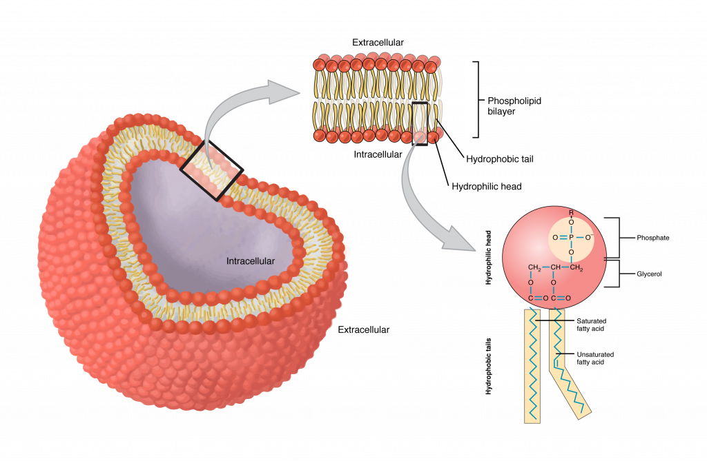
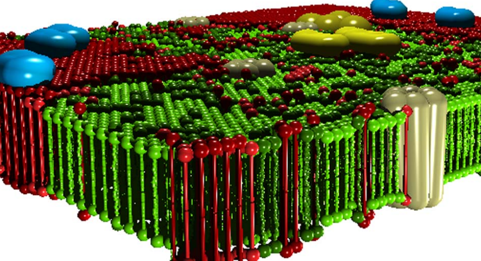

Quotation:
”Everything should be made as simple as possible, but not simpler.” Attributed to Albert Einstein.
The principle, suggested by A. Einstein, means that while one should strip away unnecessary clutter, extra features, or overly complex jargon to achieve clarity, one must be careful not to remove so much that the core message or solution becomes meaningless or inaccurate. For neurons (living matter), on the one side, it actually means that one should not reject quantities from the set of observed quantities (the mass of the charge carrier and the pressure they cause) just because they are not present in a classical discipline (electricity) of the science, which once upon the time someone hypothesized, or decided in advance, or willingly described the first case that some aspect of the functioning of a neuron reminded him of, which he considered suitable for describing neurons.
However, one must include the proven new discoveries (effects and structures) made in the past eight decades (Axon Initial Segment (AIS)) and the intentionally omitted observations (heat emission and absorption; mechanical changes) which do not fit into the pre-authorized disciplinary theory. On the other side, one must remove the foreign and fake ad hoc mechanisms and hypotheses (which contradict fundamental principles of science and elementary logics). All those issues were required to obscure that the current understanding does not match the experimental facts. The discussion does not include ’whatnot’ interactions (such as protein mechanisms that operate contrary to the laws of physics) or ion-specific ion channels operating under synchronized control (for which there is no structural evidence). These are discussed as hypotheses in physiology and biophysics, but cannot be scientifically substantiated. A detailed and precise description of the correct functioning is usually beyond the typical knowledge level of physiologists, so we give only a popular discussion of them here; the physically correct discussion is placed in the appendices. Similarly, additional knowledge about modeling is discussed in the LABEL:ch:Modeling appendix.
In our description, we consider the neuron as a closed surface (ideally: a sphere) made of an insulator (lipid bilayer) (the membrane), to which an identical outlet tube (the axon) is connected. Both are filled with saline and are surrounded by a saline solution of a different composition. In the processes related to its functioning, a small piece of it is considered a flat surface (see 1.2 figure), which has a specific structure, but for us only the protein insert openings (the ion channels) connecting the two saline solutions and the axon terminals of other neurons leading to the given neuron (the synapses) are important. The neuron is therefore considered an independent biological object, which sets and maintains its state with its own regulatory system, and its immediate external environment affects its state through the ion channels. It communicates with other neurons via axons: it sends and receives neural impulses.


We must also have Schrödinger’s comments in mind when constructing the physical picture about neurons, that we must be extremely careful. We must not use the ’ordinary’ laws of physics derived for non-living matter without revisiting them because ”the construction is different from anything we have yet tested in the physical laboratory” [1]. The discussion requires deep knowledge in science but has severe consequences for physiology, in this chapter the discussion remains on the surface and provides a holistic picture about the model. The details and deeper layers are explained in the next chapters and in the appendices. We hope the essence can be understood with knowing only the elements of science and physiology. However, the open mind is required already in this section. The fundamental principles are the same, but we must use different approximations and abstractions for the different disciplines of science and for living matter. For this reason, maybe it is more correct to call those laws for living matter ’non-disciplinary’ instead of ’non-ordinary’ laws.
We must also include the discoveries from the past seven decades, among others, that a component AIS can be found between the neuron’s membrane and the axon. It is observed that AIS has a crucial role in creating the Action Potential (AP), but that role has not been integrated into the existing theories. As a consequence, in the transient state, a neuron shall be modeled as a serial (i.e., differentiator-type) electrical oscillator, which has gated current inputs (instead of a parallel oscillator without gating its inputs, which is a good model only in the static view of the resting state) and provides a timed output. We explicitly add that the charge carriers, the neuron works with, are ions (instead of electrons) and that the signal propagation mechanism is bioelectric (instead of purely an electrical or mechanical wave or ”protein mechanism”), in many cases even without having free carriers in the respective volume. (We do not consider the ideas that the associated mechanical, optical, etc. changes cause electric phenomena. They reverse the true causality: they do not have a triggering cause; the view inherited from the narrative biology.) Electrochemical operation, especially that of semipermeable membranes, requires special attention: charge carriers are ”created” inside the biological matter. Omitting purposefully the clear physical background results in performing wrong measurements and introducing wrong concepts into biology.